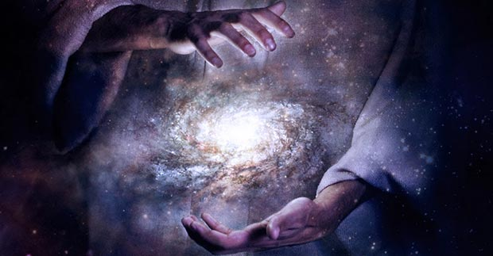
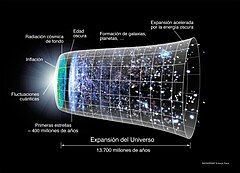
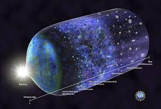
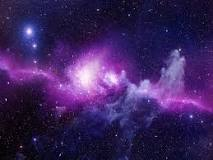
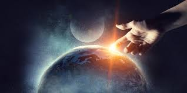
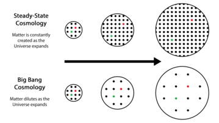

Que es el mundo?
El mundo para muchos es aquello que rodea al ser humano o el conjunto de todo lo creado por un ser mas alla
de la materia misma , aunque dicho mas de una forma formal, se refiere a la totalidad de entidades, al
conjunto de la realidad o a todo lo que fue, es y será . La naturaleza del mundo se ha conceptualizado de
diferentes maneras en distintos ámbitos

teorias del universo
- Teoría del Big Bang

- Teoría inflacionaria

- Teoría del universo oscilante

- Teoría de la Creación

- Teoría del estado estacionario
